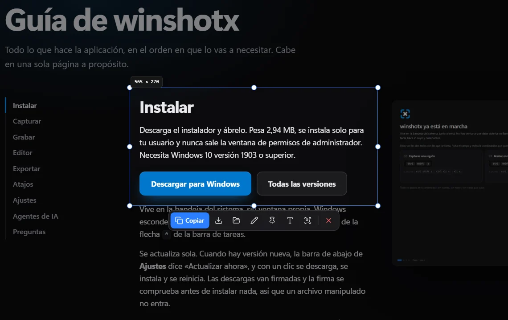
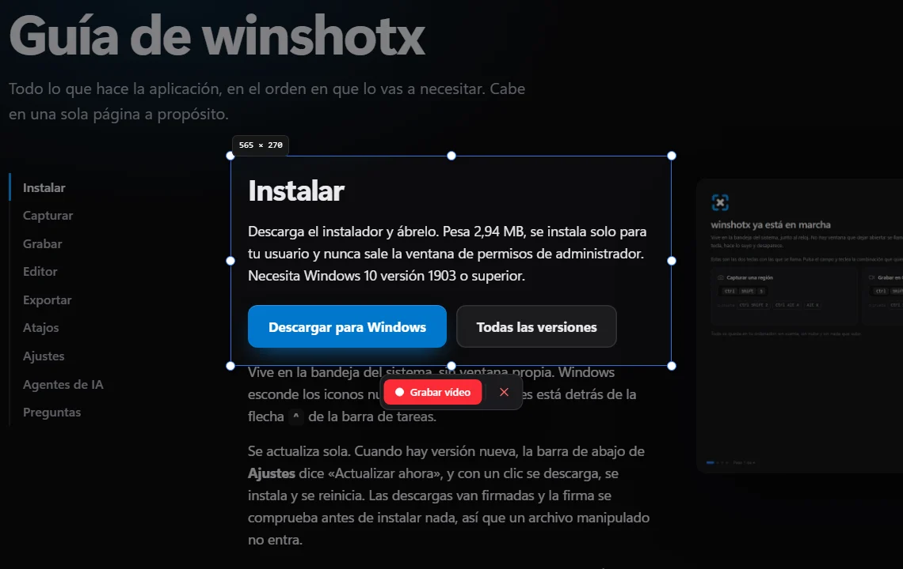
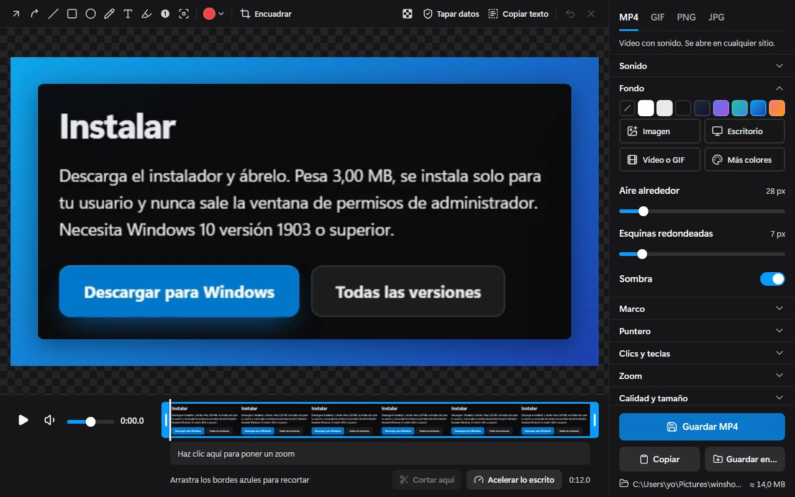

Captura al píxel
La pantalla se congela al pulsar tu atajo y recortas sobre una foto quieta, así que nada se mueve mientras eliges.
- Lupa 6× con el color exacto
- Un clic se lleva la ventana entera
- Una página larga, entera, bajando sola

Capturas, vídeos y GIF para Windows, con un editor que los deja listos para enseñar. Gratis, sin cuenta y sin nube.
Instalador de 3,00 MB · Windows 10 y 11 · o desde la terminal: winget install Mun1to.winshotx
También en la Microsoft Store, o sin instalar nada: la versión portable
114 ms. Ni te ha dado tiempo a parpadear.
Gratis de verdad: sin prueba de 7 días ni suscripción.
Cabe en tres disquetes. De los de verdad.
Sin cuenta. Ni el correo te pide.
La demo
Esto no es un vídeo: arrastra sobre la pantalla de abajo, como harías en la tuya.
La demo se ve mejor en el ordenador.
Gira el móvil para verla más grande.
La pantalla se congela al pulsar tu atajo y recortas sobre una foto quieta, así que nada se mueve mientras eliges.

MP4 o GIF de una zona, una ventana o la pantalla entera, con tu voz y tu cámara si quieres.

El editor recorta en la línea de tiempo y le pone fondo, esquinas y sombra sin salir de la ventana.

Claude Code, Codex o Cursor graban, paran, exportan el vídeo y hacen capturas con winshotx, con una orden o con su servidor MCP. Mientras graban se ve el marco rojo, como siempre.
Tu agente graba la demo. Tú te vas a por un café.
# una vez: añadirlo a Claude Code PS> claude mcp add --scope user winshotx -- "$env:LOCALAPPDATA\winshotx\winshotx.exe" mcp # o desde cualquier terminal PS> winshotx agent record --screen 0 --max-seconds 20 PS> winshotx agent stop {"ok":true,"session":"3f9c0a1b2d", ...} PS> winshotx agent export 3f9c0a1b2d --out demo.mp4 --zoom-on-clicks 0.5
Se actualiza sola desde dentro de la app. Estas son las tres últimas versiones.
Versiones 0.4.8 a 0.5.0 · 15 de noviembre de 2026
Ajustes nuevos: un riel de iconos a la izquierda, un apartado cada vez y, a la derecha, un dibujo en vivo de cómo va a salir lo que cambias.
Versión 0.4.7 · 14 de noviembre de 2026
Lo dibujado se mueve: coge una flecha, una caja o un texto ya puestos y arrástralos a otro sitio. Con doble clic reescribes un texto, Supr lo borra y Ctrl+Z lo deshace.
Versión 0.4.6 · 14 de noviembre de 2026
El texto se escribe encima de la imagen: con la «T» pinchas donde quieras, escribes en el mismo sitio y se guarda con Intro o con un clic fuera. Escape lo tira.
Si la tuya no está, abre un issue en GitHub y se contesta y se añade.
Sí, entero. Es código abierto bajo licencia MIT: el código completo está en GitHub, sin límite de tiempo ni funciones bloqueadas detrás de un pago.
No. No pide cuenta, no manda nada a ninguna nube y funciona sin conexión; el único momento en que habla con internet es para comprobar si hay una versión nueva.
Windows 10 (versión 1903 o superior) y Windows 11.
En español, inglés y chino. Sigue sola el idioma de Windows, y en Ajustes puedes elegir otro cuando quieras. Están traducidos todos los rótulos, todas las explicaciones y la bienvenida.
El instalador pesa 3,00 MB y va a tu usuario, no al sistema, así que Windows no pide permisos de administrador. Desde dentro de la app se actualiza sola con un botón, y cada descarga viene firmada y se comprueba antes de instalarse.
Sí. Está publicado en el catálogo oficial de winget-pkgs, así que winget install Mun1to.winshotx lo instala y winget upgrade Mun1to.winshotx lo actualiza. Una versión nueva tarda unas horas en aparecer en el catálogo: mientras tanto, la app se actualiza sola desde Ajustes.
Sí, desde el 7 de septiembre de 2026: apps.microsoft.com. Es la misma app, y ahí el paquete lo firma Microsoft y lo mantiene al día la propia Store, así que el actualizador de la app se aparta. El instalador de esta página y winget te dan exactamente lo mismo.
Una zona, una ventana o la pantalla entera, y una página larga bajando sola; vídeo y GIF a 15, 30 o 60 fps con el sonido del PC y tu micrófono en pistas separadas, y tu cámara si quieres; los últimos 15, 30 o 60 segundos sin haber dado a grabar; y un editor con zooms a mano o a cada clic, fondos tuyos, esquinas y sombra, recortes en la línea de tiempo, diez marcas para anotar, mosaico y los datos personales tapados con un clic.
Sí. Claude Code, Codex, Cursor o cualquier agente que use la terminal graba, para, exporta y captura con la orden winshotx agent, y los que hablan MCP lo tienen como servidor con winshotx mcp. Mientras graban se ve el marco rojo, como siempre.
Dos cosas. No viene puesta: hay que instalarla. Y habla tres idiomas, español, inglés y chino, mientras que la de Windows los habla todos. La comparación punto por punto está justo debajo, también donde pierde winshotx.
Lo que hace winshotx y no hacen las otras diez, y donde gana alguna de ellas. El tiempo y la memoria, medidos; lo demás, de la web de cada una.
8 veces más rápida que la que trae Windows. Ahí lo dejo.
¿Cuál usas ahora?
Medido en un mismo equipo con Windows 11, tres veces seguidas y las dos arrancando desde cero. El cronómetro para cuando la selección ya se ve en pantalla.
Lo que pesa el instalador.
Y además: captura una página larga, bajando sola; graba en GIF; pone tu cámara encima del vídeo; y dibuja flechas, texto y pasos numerados.
Las dos: leer el texto de la imagen; grabar vídeo MP4; sonido del PC y micrófono; y capturar una zona.
Lo que pesa el instalador.
Y además: lee el texto de una imagen, y de un vídeo; graba en GIF; pone tu cámara encima del vídeo; dibuja flechas, texto y pasos numerados; no pide cuenta; y captura una zona de la pantalla.
Las dos: los últimos segundos, sin haber dado a grabar; grabar vídeo MP4; y sonido del PC y micrófono.
Lo que pesa el instalador.
Y además: captura una página larga, bajando sola; graba en GIF; pone tu cámara encima del vídeo; graba vídeo MP4; y graba el sonido del PC y el micrófono.
Las dos: leer el texto de la imagen; flechas, texto y pasos numerados; y capturar una zona.
Lo que pesa el instalador.
Y además: lee el texto de una imagen, y de un vídeo; graba en GIF; pone tu cámara encima del vídeo; graba vídeo MP4; y graba el sonido del PC y el micrófono.
Las dos: anclar una captura encima de todo; flechas, texto y pasos numerados; y capturar una zona.
Lo que pesa el instalador.
Y además: captura una página larga, bajando sola; lee el texto de una imagen, y de un vídeo; pone tu cámara encima del vídeo; dibuja flechas, texto y pasos numerados; graba vídeo MP4; graba el sonido del PC y el micrófono; y captura una zona de la pantalla.
Las dos: grabar GIF.
Lo que pesa el instalador.
Y además: lee el texto de una imagen, y de un vídeo; graba en GIF; dibuja flechas, texto y pasos numerados; y captura una zona de la pantalla.
Las dos: los últimos segundos, sin haber dado a grabar; tu cámara encima; grabar vídeo MP4; y sonido del PC y micrófono.
Lo que pesa el instalador.
Y además: captura una página larga, bajando sola; lee el texto de una imagen, y de un vídeo; graba en GIF; pone tu cámara encima del vídeo; graba vídeo MP4; y graba el sonido del PC y el micrófono.
Las dos: capturar una zona.
Lo que pesa el instalador.
Y además: ancla una captura encima de todo y lee el texto de una imagen, y de un vídeo.
Las dos: una página larga, bajando sola; grabar GIF; tu cámara encima; grabar vídeo MP4; sonido del PC y micrófono; flechas, texto y pasos numerados; y capturar una zona.
Lo que pesa el instalador.
Y además: no pide cuenta.
Las dos: tapar datos personales en una imagen, solo; una página larga, bajando sola; leer el texto de la imagen; grabar GIF; tu cámara encima; grabar vídeo MP4; sonido del PC y micrófono; flechas, texto y pasos numerados; y capturar una zona.
Comprobado el 15 de noviembre de 2026 en la web, la ayuda y las notas de versión de cada una: Herramienta de Recortes, Xbox Game Bar, ShareX 22.4, Greenshot 1.3, Flameshot 15, ScreenToGif 2.43, OBS Studio 33, Lightshot, PicPick 7.6, Snagit 2027. «No» quiere decir que no sale en ninguna de sus fuentes oficiales; ScreenToGif es la versión que su autor ya llama antigua. Si algo ha cambiado, avísame y se corrige.
El instalador va a tu usuario y no al sistema, así que Windows no te pide permisos de administrador. Desde dentro de la app se actualiza sola con un botón.
winshotx es gratis y no tiene versión de pago: si te ahorra tiempo, el café es la única forma de apoyarla.